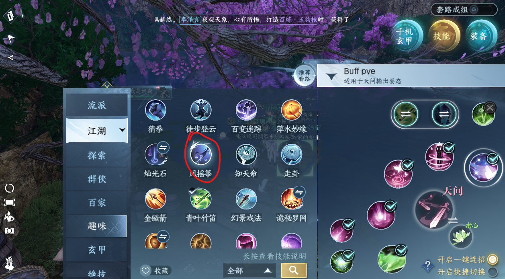

Nhiệm Vụ Tri Kỷ
1. Vào giao diện tri kỷ rồi ấn nút góc phải bên dưới, chọn người muốn kết tri kỷ (thân mật cần 2000 điểm).
2. Làm nhiệm vụ lấy tín vật ở 3 làng (Hàng Châu, Đào Khê, Từ Châu).
3. Nhiệm vụ Hàng Châu là hái sen tới khi nào ra nhụy sen sau đó nói chuyện (chọn bừa theo tổ tiên).
4. Nhiệm vụ Đào Khê là nói chuyện 5 người rồi leo núi (1 người nối dây, người còn lại leo núi).
{kind=link}
5. Nhiệm vụ Từ Châu là vào hang nhặt kiếm đánh boss, boss sẽ không mất máu tới khi hiện nút phản xạ rồi ấn nút - 2 người cùng nhấn nhé không thì dễ phải làm lại.
Đi theo nhiệm vụ để quay về nộp tín vật cho chị gái npc là xong.
Mỗi tuần làm max 2000 điểm tri kỷ. Mỗi ngày có 3 nhiệm vụ và 3 lần chụp ảnh (tính điểm)
Tọa độ chụp ảnh tri kỉ:
1. Map Biện Kinh - 汴京:
(1168,833) - (1165,853) - (1164,882) - (1393,1105) - (1417,1205) - (1417,1221) - (1242,1225) - (1020,1225) - (951,1032) - (1026,1000)
2. Map Hàng Châu - 杭州:
(1108,1000) - (1119,940) - (1014,945) - (975,996) - (1019,1204) - (1056,1291) - (1154,1306) - (1241,1298) - (994,1192) - (1417,1391) - (784,804) - (1410,836)
3. Map Từ Châu - 磁州:
(472,995) - (457,883) - (462,749) - (630,681) - (1041,790) - (744,958) - (1077,1050) - (1122,1067) - (1286,1339) - (696,1428)
4. Map Tam Thanh Sơn - 三清山:
(1043,851) - (1090,818) - (1131,699) - (1183,933) - (1083,900) - (1145,738) - (1294,839) - (1049,791)
5. Map Đào Khê Thôn - 桃溪村:
(1003,882) - (1281,1056) - (918,1179) - (1354,1142) - (1343,1285) - (1001,1074)
6. Map Kính Hồ - 镜湖:
(782,342) - (402,539) - (722,382) - (382,333) - (770,246) - (311,373)